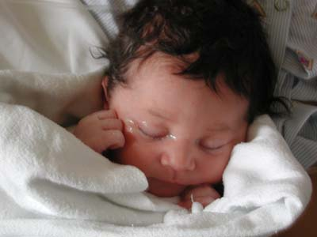

This page is hosted on AFS file server space, which is being shut down on November 13, 2018.
If you are seeing this message, your service provider needs to take steps now.
Visit afs.unc.edu for more information.

Isabelle, born September 6, 2000,
to Sarah and Teddy
With grandson Jordan at Grand Canyon, August 15, 2000.